Final Project | Assignments | Download | About | Contact
On wednesday 02.23.2015 we’ve got the fifth online lesson with Neil Gershenfeld.
The next lessons can be found on the Fab Academy account on Vimeo.
For this week the assignment was
** * design and 3D print an object (small, few cm) that could not be made subtractively
- 3D scan an object (and optionally print it) **
I’ll make a super-light organic structure, possible part of my final project (a pillar module to easily scale every planet).
The structure is something like that: an outer structure that connect two plates; inside a thin parabolic pillar to sustain the upper plate during the printing.
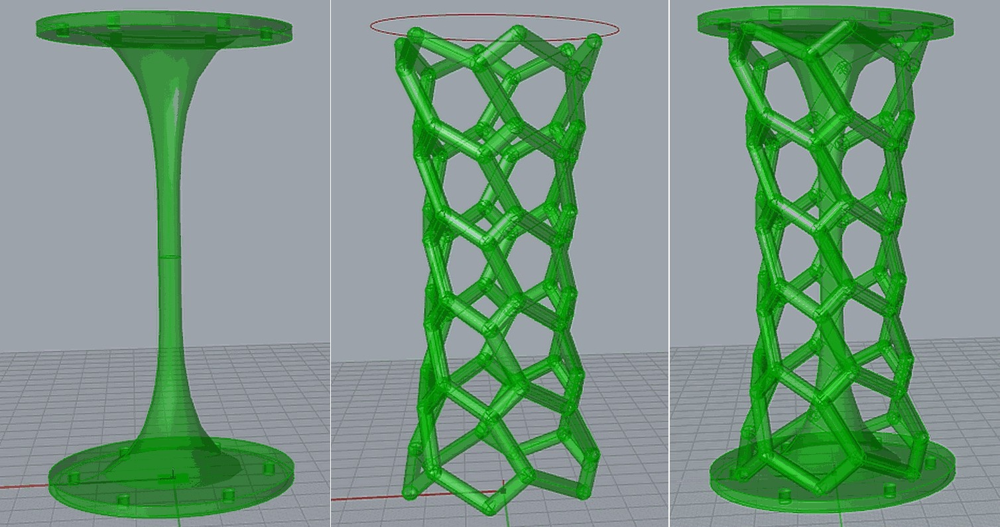
I wish to obtain a more organic outer grid.
To achieve that result I made some prints.
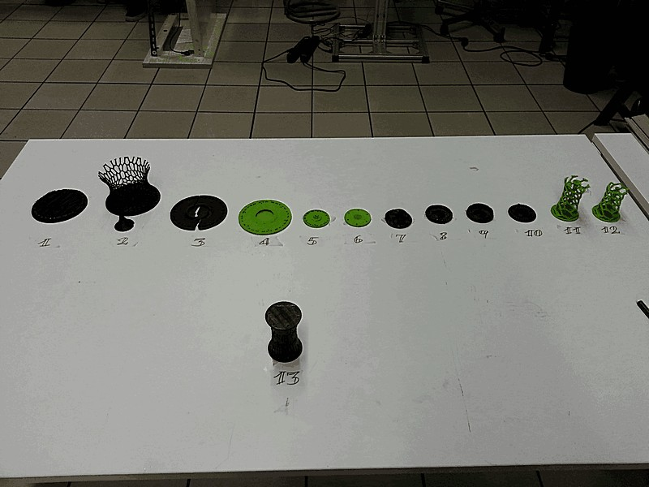
I started from a much bigger idea, and first I tried to print just the final part to verify how the print may go with a 100mm bridge between multiple points. (what you can see in this img is the bottom part, with not so cohesive bottom layer).
At the end I decided to add the central pillar.
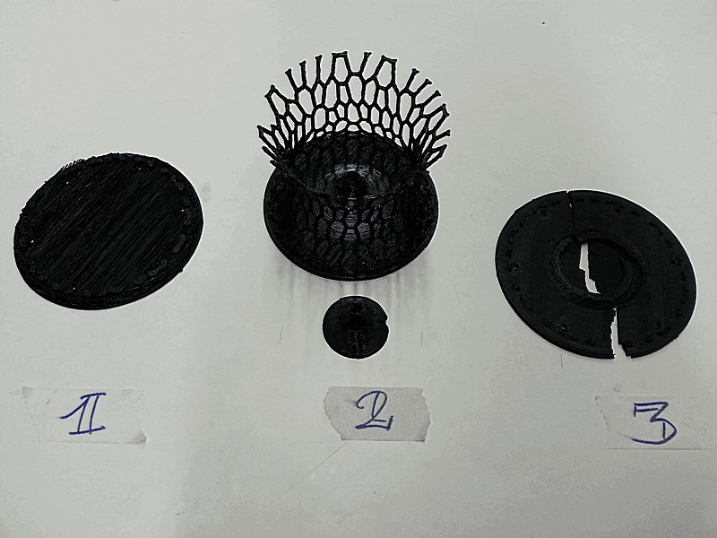
The second attempt was printed pretty well, but unfortunately the central pillar has broken in the middle during the printing and so the print has been aborted.
As you can see the structure has to be much more organic, but due to the size of its thin branches it works well on large bases.
Here you can see a shot of how it may looks like.
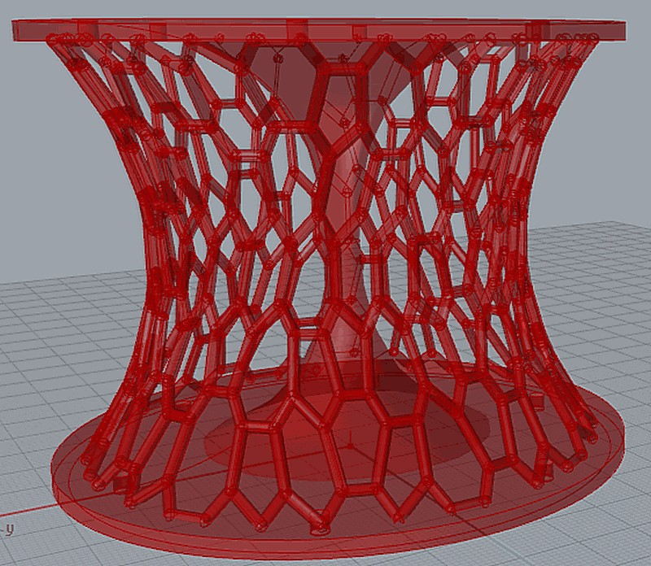
For the third attempt I tried to print it hollow but with more perimeters. Build so much small branches involve continuous movement of the feed motor in both directions due to the retraction. This behaviour probably has jagged the printer head; it’s wired because the previous attempt has been printed pretty well. I decided to break the print to test how tough can be a 3mm by 100mm diameter token of PLA…and it’s far more sturdy than I’d thought.
I tried one more time printing the same model but with different retraction settings, but nothing has changed.
Until now I used Cura 15.02.1 for the slicing process.
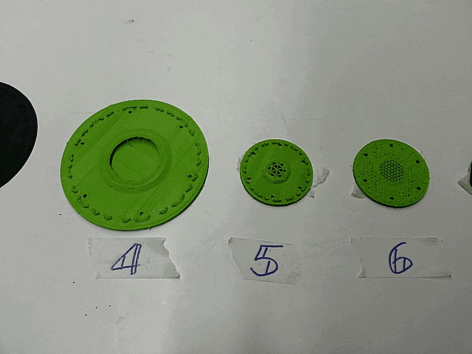
Than I realize that the base was too wide, so I reduced the diameter, in order also to reduce time for printing.
This time I used CraftWare, a great slicing software with a lot of parameters, tips balloons, really fast algorithm and many other features.
One of its features is a triangular grid infill, so I used it on the attempt #5 and #6, respectively with 10% and 20%.
I stopped both for the same reason of the #4: at 4mm height printer stops working.
So I moved to another printer (from a bowden to a direct) to verify if the different kind of feed can sensibly change the output.
The answer is YES, IT DOES.
Not just the printer has changed but also the material: XT, an ABS-like material tougher than PLA (250°C/70°C).
…but due to the small dimension of the branches related to the main diameter the branches sticks together in a messy bunch of plastic.
I tried some slight change in slicing settings, but nothing has changed at the printing.
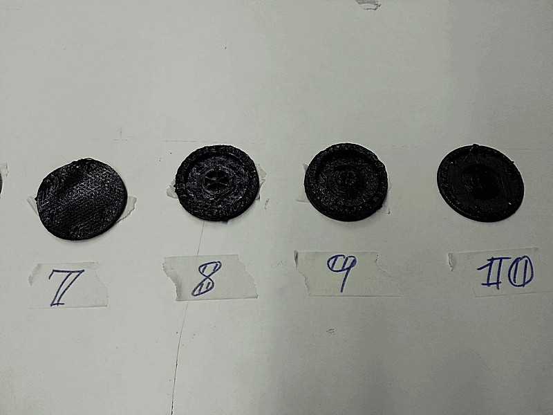
I returned to the printer equipped with the bowden to print a different outer structure (the same that you can see in the first screenshot), with wider holes and thicker branches, but also with more severe overhang.
I printed it without support because of the brittle structure.
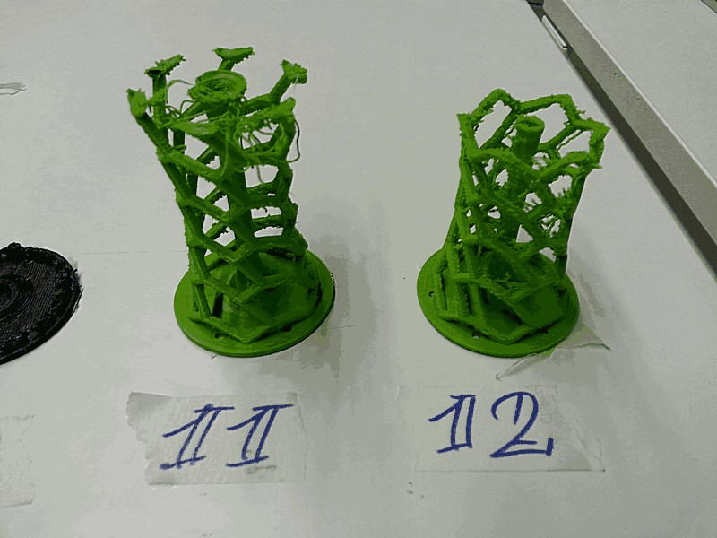
as you can see the overhang (about 68°) are not printed so well, but the structure has been built. Unfortunately it started making “spaghetti effect”.
Branches are stuck together, but considering the minimum dimensions and the tiny holes, the result is fine and do its job.
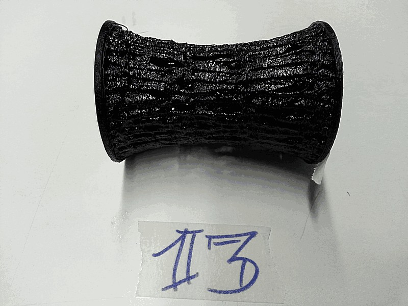
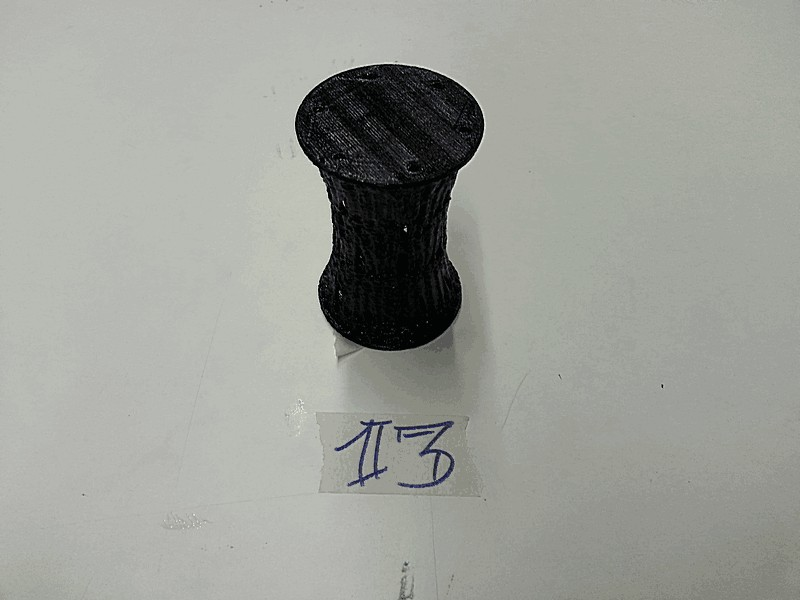
Download
pillar_mod15
I scanned a real, authentic, Klingon sword using a Kinect and Scanect.
Setting a good stage can drastically reduce the effort to obtain a good result, so I hanged the model to the legs of a table.
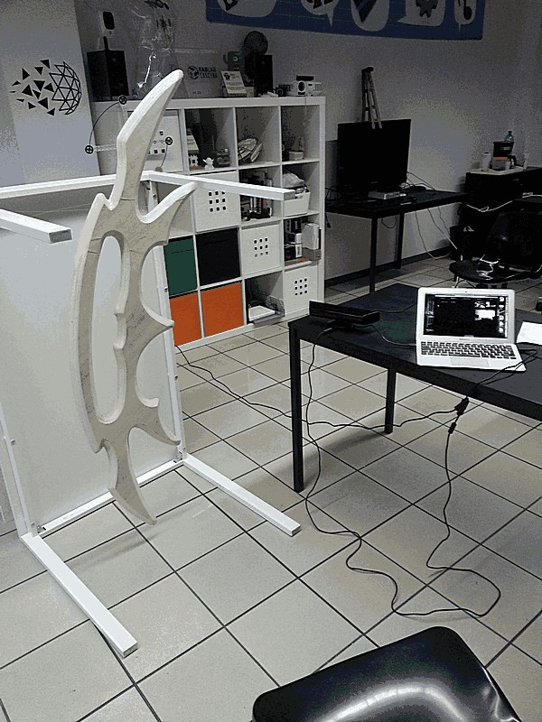
However with a Kinect you can obtain just a gross result.
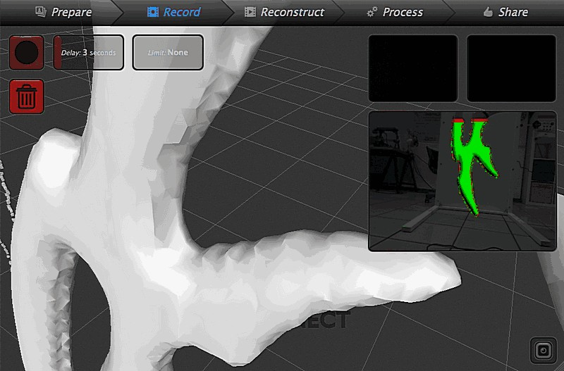
The back is flat and at a first attempt I didn’t scan it. Wen I used the “fill holes” function this was the result
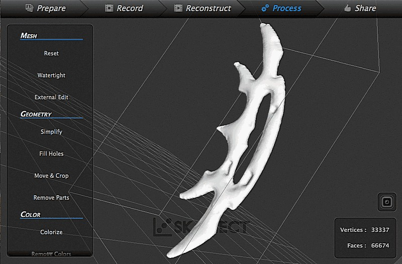
so I scanned it again and it comes out fairy well. However the edge are not so sharp, so I tried to mark the model with some electrical tape just to give to the software some more texture references.
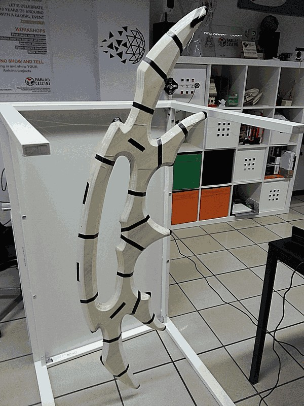
The result was the same; you can appreciate some difference just if you turn in hig-detail mode in the Fusion menu. This way the software interprets the “black” as holes, and the effect is very similar to rubber around a balloon.
At the end the mesh was too heavy and so I turned back to the mid-res (it’s an euphemism).